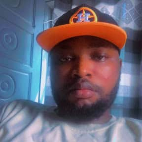

Our mission is to provide thrilling, safe, and unforgettable white water rafting experiences that connect people with nature and create lasting memories. We believe in adventure, teamwork, and the joy of conquering the rapids together!
WDD 130 | Rapid Riders: White Water Rafting Adventures

Rapid Riders
History
Founded in 2010 by passionate river enthusiasts, Rapid Riders began with a single raft and a dream to share the excitement of white water rafting with the world. Over the past decade, we've grown into one of the most trusted rafting companies, having guided over 50,000 adventurers through the most spectacular river canyons. Our commitment to safety, environmental stewardship, and exceptional customer service has made us a leader in the industry. Today, we operate on three major rivers and continue to explore new adventures for our clients.
Adventure Awaits You!



Hello! I'm Adekunle David Lawrence, a web development student at BYU-Idaho. This page demonstrates my skills in semantic HTML, CSS layout, and web standards while showcasing my passion for white water rafting adventures.